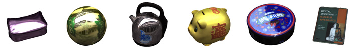
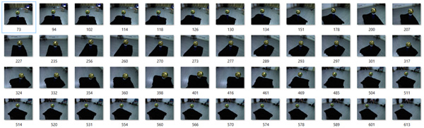

Simultaneous Localization and Appearance Estimation with a
Consumer RGB-D Camera
Hongzhi Wu
Zhaotian Wang
Kun Zhou
IEEE Transactions. on Visualization and
Computer Graphics, 22, 8(Aug. 2016), 2012-2023.

Acquiring general material appearance with hand-held consumer
RGB-D cameras is difficult for casual users, due to the
inaccuracy in reconstructed camera poses and geometry, as well
as the unknown lighting that is coupled with materials in
measured color images. To tackle these challenges, we present a
novel technique, called Simultaneous
Localization and Appearance Estimation (SLAE), for estimating the spatially varying isotropic
surface reflectance, solely from color and depth images captured
with an RGB-D camera under unknown environment illumination. The
core of our approach is a joint optimization, which alternates
among solving for plausible camera poses, materials, the
environment lighting and normals. To refine camera poses, we
exploit the rich spatial and view-dependent variations of
materials, treating the object as a
localization-self-calibrating model. To recover the unknown
lighting, measured color images along with the current estimate
of materials are used in a global optimization, efficiently
solved by exploiting the sparsity in the wavelet domain. We
demonstrate the substantially improved quality of estimated
appearance on a variety of daily objects.
Paper(.PDF) [Hi-res, 22.2MB]
[Low-res, 1.5MB]
[IEEE Xplore
(OpenAccess)]
Bibtex [.TXT]
Video [Vimeo
HD] [Youtube]
[.MP4,
29.4MB]
Presentation Slides
[.PPSX, 85.2MB]
Here we release the binary executables and related
data to compute the xmas-ball example in the paper, to help
reproduce our result as well as stimulate further research along
the direction of casual material appearance acquisition. Please
email the first author if there is any problem.

Xmas-ball Dataset [.7z, 1.47GB]
Due to the large size of the file, it is recommended to use a
download manager such as
FlashGet to get the file.